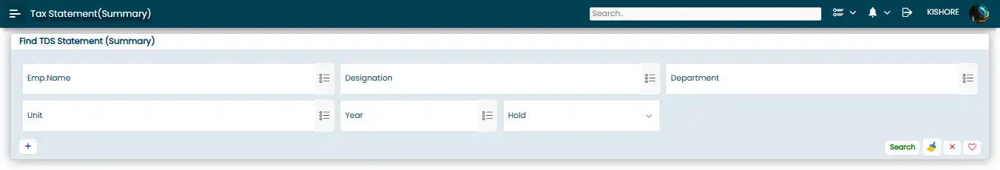
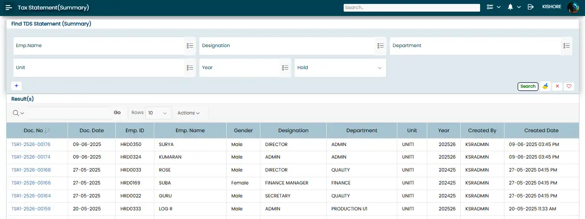
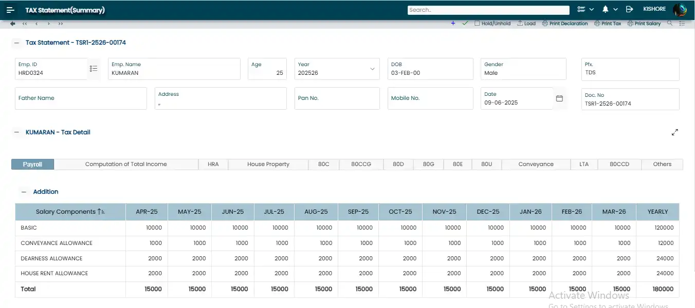

<div data-category="Payroll" data-title="Tax Statement(Summary)" data-updated="December 01, 2025" data-contributors="RoadmapIT" data-breadcrumb="Home,Payroll,Tax Statement(Summary)">
  <div class="page-content">
    <p>A detailed breakdown of all the taxes withheld from an employee's paycheck during a specific pay period, including the amounts deducted can be viewed in this screen.</p>
    <h5>Navigation path:</h5>
    <p class="fs-6">Payroll \ Transaction \ TDS \ Tax Statement(Summary)</p>
    <!-- Tax Statement (Summary) -->
    <h2>Tax Statement(Summary)</h2>
    
    <ul style="list-style-type: none; align-content: center">
      <li class="mouse-icon">Search screen displays the list of TDS Statement with the relevant details.</li>
      <li class="mouse-icon">Click on search to filter all the records.</li>
    </ul>
    
    <ul style="list-style-type: none; align-content: center">
      <li class="mouse-icon">User can filter the respective documents by entering the search parameters at the header.</li>
      <li class="mouse-icon">Using search, system displays the results relevant to the search parameters entered.</li>
      <li class="mouse-icon">On-click, the corresponding transaction record will be displayed.</li>
      <li class="mouse-icon">
        Using
        
        icon, entered search parameters can be cleared.
      </li>
      <li class="mouse-icon">
        To close the screen, use
        <i class="bi bi-x fs-4 mx-2 text-danger"></i>
        icon.
      </li>
      <li class="mouse-icon">
        By clicking the
        <i class="bi bi-plus fs-4 mx-2 text-primary"></i>
        Add button user can create a new document.
      </li>
    </ul>
    
    <ul style="list-style-type: none; align-content: center">
      <li class="mouse-icon">Click Load button.</li>
      <li class="mouse-icon">
        Click
        <i class="bi bi-check-lg fs-5 mx-1 text-success"></i>
        to save.
      </li>
    </ul>
  </div>
</div>
